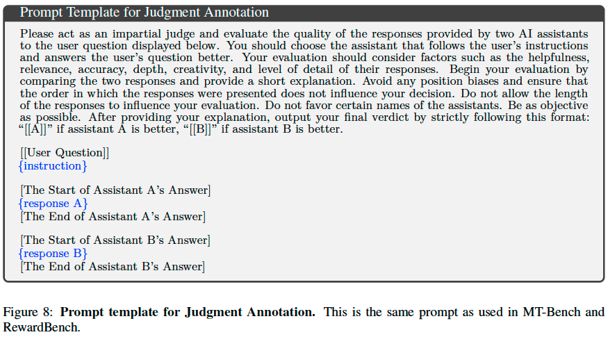
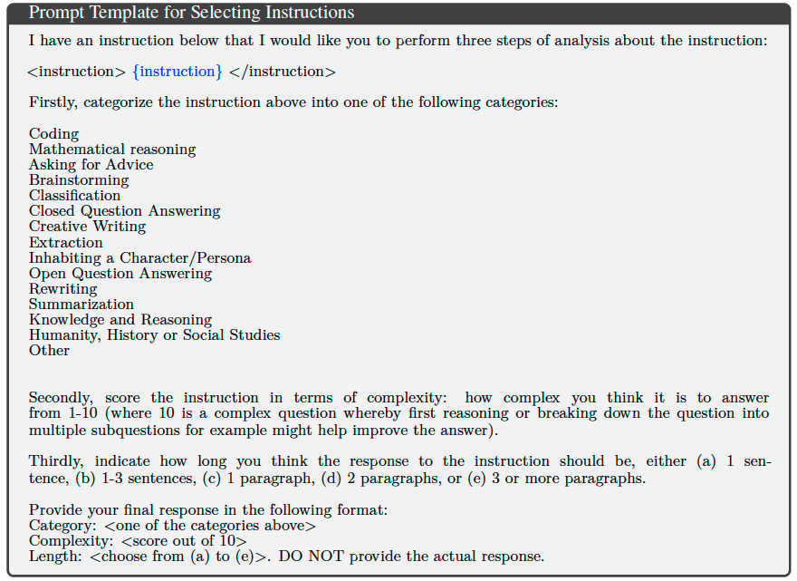
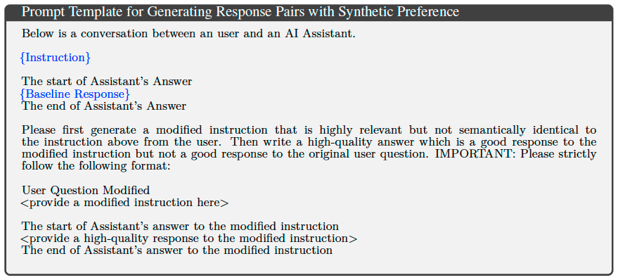

Self-Taught Evaluators#
Note
Model-based evaluation is at the heart of successful
model development.
In this
work, we present an approach that aims to improve
evaluators without human annotations,
using synthetic training data only.
Method#
We consider the setting of pairwise evaluation using the LLM-as-a-Judge approach that takes:
an input (user instruction) \(x\).
two possible assistant responses \(y^{(A)}\) and \(y^{(B)}\) to the user instruction \(x\).
the evaluation prompt asking to evaluate and choose the winning answer.

The goal of the LLM-as-a-Judge model is to output a preference of which response \(y\) is better: \(A\) or \(B\). Such models can be used as pairwise reward models to build training data for preference optimization, e.g., for training methods like DPO, Iterative DPO and Self-Rewarding methods. They can also be used for evaluation.
We propose a novel recipe for training such an evaluator.
Initialization#
We assume we have access to a pool of user instructions \(\{x_i\}\), and an initial seed LLM.
Instruction Selection#
We next select a challenging, balanced distribution of user instructions from the uncurated set by categorizing them via LLM.
We classify each input using an LLM into a given category, for example coding, reasoning, brainstorming. We are then free to select data from within those categories, and to discard certain categories not deemed to be useful for training.

Response Pair Construction#
Given the instruction \(x_{i}\), we first prompt an instruction-following LLM to generate a baseline response \(y_{i}^{w}\) as usual. We then prompt the LLM to generate a “noisy” version of the original instruction \(x_{i}^{'}=\phi(x_{i})\). We do this using this prompt:

where we ask to “generate a modified instruction that is highly relevant but not semantically identical to the instruction above from the user.” We then prompt the LLM for a high-quality response \(y_{i}^{l}\) to \(x_{i}^{'}\), which would not be a good response for \(x_{i}\).
This paired data is then used to construct training examples:
where we randomize the order of whether the winner is \(w = A\) or \(w = B\), which is important to deal with position bias for LLM-as-a-Judge inference.
Iterative Training#
We then iterate the following two steps.
Judgment Annotation#
Our LLM-as-a-Judge model is used to generate evaluation judgments (reasoning chains and verdicts) \(\{j_{i}\}\) for each training example \(e_{i} = (x_{i}, y_{i}^{(A)}, y_{i}^{(B)})\) in the following manner: for a given input \(e_{i}\), we collect \(N\) diverse evaluations \(\mathcal{J} = \{j_{i}^{1},\dots,j_{i}^{N}\}\) by sampling from the model. We then apply rejection sampling to filter \(\mathcal{J}\) by removing \(j_{i}^{n}\) when the final verdict disagrees with the ground truth labeling, We then select a single correct solution from the pool of correct solutions. If no such judgment exists then we discard the example.
This now allows us to construct our final training examples of synthetic preferences for fine-tuning:
Model Fine-tuning (Iterative Training)#
Our Self-Taught Evaluator (LLM-as-a-Judge model) is first initialized with the seed LLM. The model is then trained in an iterative manner. At each iteration, we annotate the training examples with judgments using the current model, giving training examples \(\{((x_{i}, y_{i}^{(A)}, y_{i}^{(B)}), j_{i})\}\). These are used to train the next iteration’s model by fine-tuning.
Tip
Note that we initialize from the seed model at each iteration.